UDN
Search public documentation:
AppleiOSProvisioningSetupCH
English Translation
日本語訳
한국어
Interested in the Unreal Engine?
Visit the Unreal Technology site.
Looking for jobs and company info?
Check out the Epic games site.
Questions about support via UDN?
Contact the UDN Staff
日本語訳
한국어
Interested in the Unreal Engine?
Visit the Unreal Technology site.
Looking for jobs and company info?
Check out the Epic games site.
Questions about support via UDN?
Contact the UDN Staff
移动设备主页 > iOS Provisioning概述 > iOS Provisioning设置
iOS Provisioning(信息提供)设置
概述
 这个工具负责打包您的应用程序、使用您的apple开发者证书签名您的应用程序及部署包到iOS设备中。签名过程使用公开密钥密码学，既需要使用公开密钥也需要使用私有密钥。
这个工具负责打包您的应用程序、使用您的apple开发者证书签名您的应用程序及部署包到iOS设备中。签名过程使用公开密钥密码学，既需要使用公开密钥也需要使用私有密钥。
设置Provisioning
- 如果您第一次开发针对iOS硬件的项目，那么请从创建新的Provisioning部分开始。
- 如果您以前进行过设置来开发针对iOS硬件的程序，那么请跳转到转移现有Provisioning部分。
创建新的Provisioning
- 生成密钥对和证书请求。
- 创建证书和mobile provision(移动设备信息提供)。
- 导入provision(信息提供)和证书到UDK中。
生成证书请求和密钥对
该过程的第一步要求从配置向导的 New Users(新用户) 选卡中生成证书请求和密钥对。然后把它们保存到磁盘中以便在稍后的过程中使用。
-
点击
 按钮来显示 Generate Certificate Request(生成证书请求) 窗口。
按钮来显示 Generate Certificate Request(生成证书请求) 窗口。
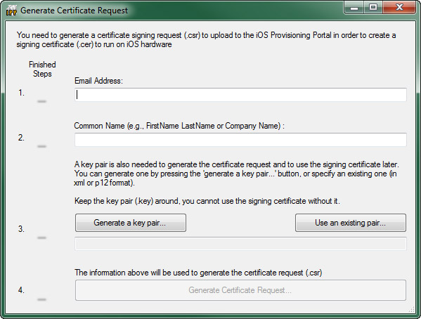
-
使用以下信息填充文本域：
- Email Address(邮箱) - 和您的开发者账户相关联的邮箱 (比如，您的Apple ID)。
- Common Name(一般名称) - 您的证书所使用的名称 (比如，把您的全名或公司的名称)。
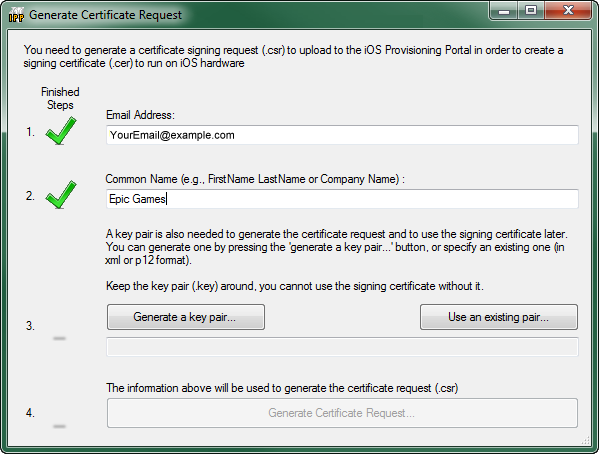
-
点击
 按钮来生成密钥对文件。
这是将弹出一个对话框允许您保存生成的密钥对到磁盘中。保存这个文件到一个已知文件夹中。可以把它保存到您的计算机中的任何地方，但是把它和UDK的其他文件保存到一个地方是有意义的。比如：
按钮来生成密钥对文件。
这是将弹出一个对话框允许您保存生成的密钥对到磁盘中。保存这个文件到一个已知文件夹中。可以把它保存到您的计算机中的任何地方，但是把它和UDK的其他文件保存到一个地方是有意义的。比如：
C:\UDK\Developer Files

- 点击 按钮来生成证书请求文件。 这是将弹出一个对话框允许您保存生成的证书请求到磁盘中。把它和密钥对文件保存到同一目录中。
生成证书和Provision
-
点击链接跳转到 iOS Dev Center(iOS开发中心) 主页。这是所有iOS开发的主页。

-
点击 Login(登录) 按钮登录您的开发者账户。
 在下一页中输入您的开发者登录凭证来 Sign In(签名) 。这将返回到 iOS Dev Center(iOS开发中心) 主页。
在下一页中输入您的开发者登录凭证来 Sign In(签名) 。这将返回到 iOS Dev Center(iOS开发中心) 主页。
-
点击右侧工具条上的链接跳转到 iOS Provisioning Portal ：

-
现在，您应该位于 iOS Provisioning Portal 主页。
 点击 Launch Assistant(启动辅助工具) 来启动 Development Provisioning Assistant(开发Provisioning辅助工具) ：
点击 Launch Assistant(启动辅助工具) 来启动 Development Provisioning Assistant(开发Provisioning辅助工具) ：
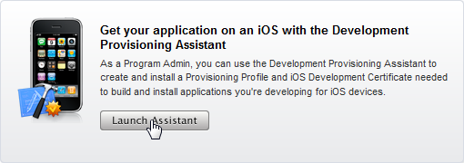
-
这时 Development Provisioning Assistant 应该是打开的。点击 Continue(继续) 来开始provisioning过程：

-
现在，您必须创建一个 App ID 。这是一个唯一的标识符，允许iOS应用程序和Apple Push Notification服务或外部硬件附件进行通信。这时，您需要选择 App ID 的显示名称，它是一个可读的名称，将会在iOS Provisioning Portal网站的各个地方用到。
注意: 默认情况下，通过辅助工具创建的App Id会为包标识符使用一个通配符。这将会使得该provision和Game Center、In App Purchases及 Apple Push Notification服务不兼容。请参照高级Provisioning设置部分获得关于如何创建可以和这些功能兼容的App ID及把它分配给您的provision profile(信息提供概述)的更多信息。
输入新的 App ID Description(App ID描述) 到文本域中:
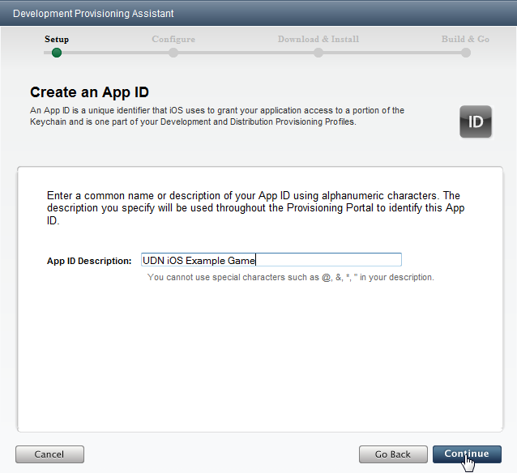
-
接下来，您需要为该provision分配开发设备。显然，这意味着您需要有一个iOS设备(iPad、iPhone、iPod Touch)。如果您需要使用多个设备，那么请参照高级Provisioning设置部分。
输入以下信息到文本域中：
- Device Description(设备描述) - 这仅是用于标识特定设备的显示名称。如果您想使用多个设备，那么稍后您可以通过 iOS Provisioning Portal 添加多个设备。请参照 添加设备部分获得更多信息。
- Device ID - 这是您的iOS设备的唯一id。有一些关于通过Xcode和Mac定位id的方法的介绍，但是另一个找到Device ID(设备ID)地方法是使用 App Store中的 iDevice Info(我的设备的信息) 应用程序。该应用程序甚至会发送邮件告诉您该id，以便您可以很容易复制并把它粘帖到相应的域。
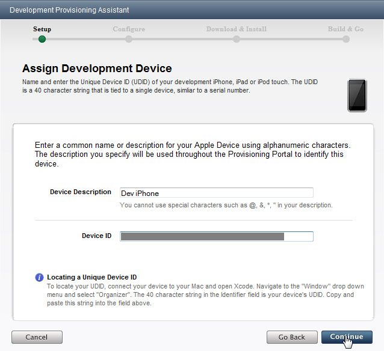
-
现在您应该看到了 Generate Certificate Signing Request(生成证书签名请求) 页面。点击 Continue(继续) 跳过这个页面，因为您已经通过先前的配置向导生成了证书请求。
 现在，您将提交开发者证书请求。导航到通过配置向导生成的证书请求(.csr文件)并选中它，然后点击 Continue(继续) 。
现在，您将提交开发者证书请求。导航到通过配置向导生成的证书请求(.csr文件)并选中它，然后点击 Continue(继续) 。
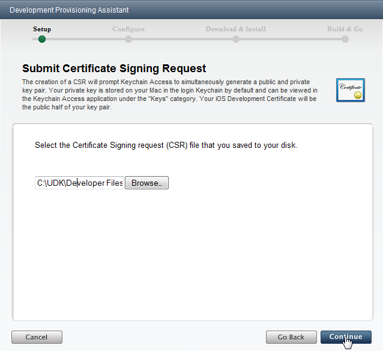
-
输入关于您的provisioning profile的描述信息，然后点击 Continue(继续) 。这是用于标识这个特定provision的显示名称。
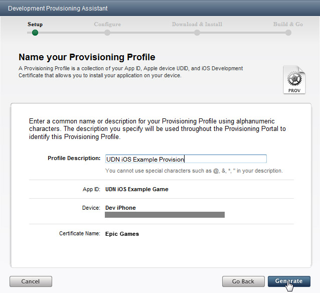
-
当加载下一个页面时将会创建provisioning profile。一旦出现大的绿色对勾，那么说明已经创建了provisioni，然后您可以点击 Continue(继续) 。
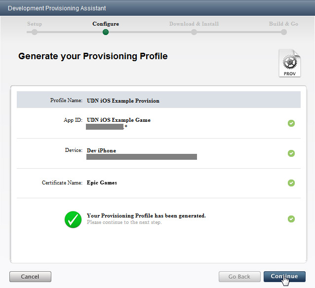
-
您需要下载新创建的provisioning profile，以便可以把它导入到UDK中。点击 Download(下载) 并选择保存文件的位置(将其保存到和密钥对及证书请求相同的位置是个不错的想法)。
 下载完文件后，点击 Continue(继续) 来继续处理。
下载完文件后，点击 Continue(继续) 来继续处理。
 点击下一页的 Continue(继续) 跳过该页，除非您想继续在Mac上的Xcode中安装该provision。对于UDK开发来说这是没有必要的，但是如果您想把游戏提交到App Store 时这样做是有必要的。
点击下一页的 Continue(继续) 跳过该页，除非您想继续在Mac上的Xcode中安装该provision。对于UDK开发来说这是没有必要的，但是如果您想把游戏提交到App Store 时这样做是有必要的。

-
也需要下载创建的开发者证书，因为必须把它导入到UDK中。点击 Download(下载) ，并把该证书和您的其他文件保存到一起。
 下载完文件后，点击 Continue(继续) 来继续处理。
下载完文件后，点击 Continue(继续) 来继续处理。
 点击下一页的 Continue(继续) 跳过该页，除非您想继续在Mac上的Keychain 中安装该证书。对于UDK开发来说这是没有必要的，但是如果您想把游戏提交到App Store 时这样做是有必要的。
点击下一页的 Continue(继续) 跳过该页，除非您想继续在Mac上的Keychain 中安装该证书。对于UDK开发来说这是没有必要的，但是如果您想把游戏提交到App Store 时这样做是有必要的。

-
点击 continue（继续） 跳过下一个页面。这不适用于使用UDK开发的 iOS应用程序。
 生成开发者证书和provisioning的过程现在已经完成了。点击下一页上的 Done(完成) 来退出辅助工具。
生成开发者证书和provisioning的过程现在已经完成了。点击下一页上的 Done(完成) 来退出辅助工具。
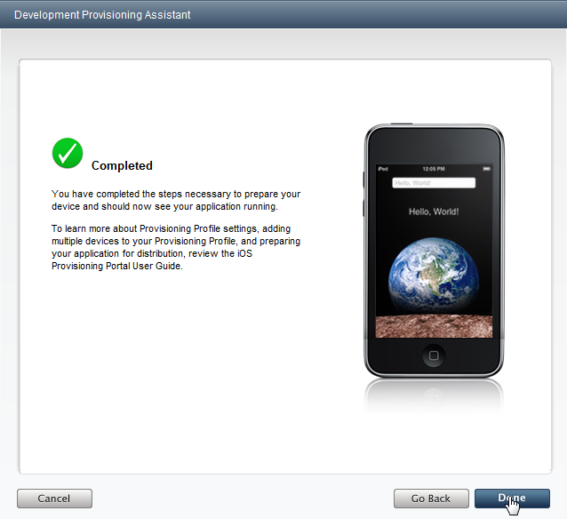
导入新的Provision和证书
一旦生成并下载了开发者证书和provisioning profile(信息提供概述)，那么需要通过配置向导把它们导入到UDK中。-
点击
 按钮来导入provisioning profile(信息提供概述文件)。使用打开的对话框找到先前下载的provisioning profile。一旦成功导入该profile后将出现一个绿色对勾。
按钮来导入provisioning profile(信息提供概述文件)。使用打开的对话框找到先前下载的provisioning profile。一旦成功导入该profile后将出现一个绿色对勾。

-
接下来，点击按钮导入开发者证书。使用文件对话框找到先前下载的证书。将会弹出一个消息框提示您导入您的先前创建的密钥对。
 点击 OK(确认) 并使用打开的文件对话框找到密钥对文件。一旦成功地导入证书和密钥对后将出现绿色的对勾。
点击 OK(确认) 并使用打开的文件对话框找到密钥对文件。一旦成功地导入证书和密钥对后将出现绿色的对勾。
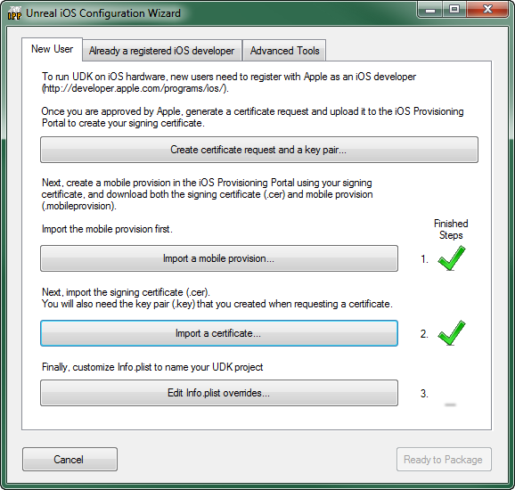
-
点击
 按钮来打开 Customize Info.plist(自定义Info.plist) 对话框。
按钮来打开 Customize Info.plist(自定义Info.plist) 对话框。

-
填写以下信息：
- Bundle Display Name(包显示名称) - 这是显示在iOS设备上的名称，位于主页的应用程序图标的正下方。您要确保这是个简洁的名称，以便它适合已分配的空间，不会被剪切掉。(示例:
UDN iOS Game) | - Bundle Name _ 用于标识应用程序的简略名称。这个名称应该小于16个字符。(示例:
UDNiOSGame) | - Bundle Identifier*_ 这个标识符应该和先前在Apple的开发者网站上创建的 App ID的包标识符相匹配。如果您使用了通过辅助工具完成的自动App ID创建过程，那么App ID的包标识符是一个通配符(*),这里输入的包标识符可以使您想使用的任何东西。如果您使用手动创建方法(高级Provisioning)并指定了明确的包标识符，那么这里输入的包标识符应该和那个标识符完全地匹配。(*示例:
com.EpicGames.UDNiOSGame)

- Bundle Display Name(包显示名称) - 这是显示在iOS设备上的名称，位于主页的应用程序图标的正下方。您要确保这是个简洁的名称，以便它适合已分配的空间，不会被剪切掉。(示例:
-
点击
 按钮来保存 Info.plist 信息。一旦成功保存 Info.plist 时将会出现绿色的对勾。
按钮来保存 Info.plist 信息。一旦成功保存 Info.plist 时将会出现绿色的对勾。

-
点击
 按钮退出配置向导。
如果您通过编辑器中工具条上的 Start this Level on iPhone(在iPhone上启动这个关卡) 按钮访问配置向导，打包过程将会继续并且游戏将会被加载到连接的iOS设备上。如果没有连接设备，那么将会出现错误。
如果通过Windows中的开始菜单访问配置向导，那么此时将会简单地关闭配置向导。*待处理的事情* - 如果通过Unreal Frontend打开配置向导是否也是这个情况？ - Jeff Wilson
按钮退出配置向导。
如果您通过编辑器中工具条上的 Start this Level on iPhone(在iPhone上启动这个关卡) 按钮访问配置向导，打包过程将会继续并且游戏将会被加载到连接的iOS设备上。如果没有连接设备，那么将会出现错误。
如果通过Windows中的开始菜单访问配置向导，那么此时将会简单地关闭配置向导。*待处理的事情* - 如果通过Unreal Frontend打开配置向导是否也是这个情况？ - Jeff Wilson
转移现有Provisioning

重新获得证书
iOS应用程序的现有开发者如果想使用UDK开发iOS游戏，那么他们必须从Keychain Access应用程序中导出证书和私有密钥，才能把它们导入到运行UDK的PC上。 在Mac上，如果您生成了一个代码签名请求并且登录用户还没有密钥对，那么它将默默地创建并安装一个密钥对。如果登录的用户已经有密钥对，那么它将总是使用那个密钥对。因为密钥对仅存在于生成CSR的Mac机器上，所以您从Apple下载的证书仅能用于那个机器上，除非您同时导出了证书和密钥对。 注意 ： 当您使用Keychain Access应用程序时，它并没有明确指出您正在导出什么，但是最后结束时您可以选择导出对象：- 仅导出证书(不导出密钥对)
- 仅导出密钥对(不导出证书)
- 分别到处公开密钥和私有密钥
- 同时导出证书和密钥对
-
启动Keychain Access应用程序。
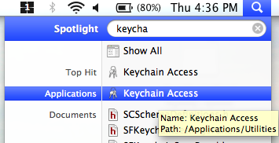
-
从 Keychains 面板中选择 login(登录) ，然后在Keychain Access应用程序的 Category(类别) 面板中选择 My Certificates(我的证书) 。

-
选择您的Developer certificate(开发者证书)。这将会同时导出证书和密钥对。

-
现在，从 File(文件) 菜单中选择 Export items(导出项目)... 菜单来导出证书和密钥对。
 请使用打开的文件对话框以.p12文件的形式保存证书和密钥对。
请使用打开的文件对话框以.p12文件的形式保存证书和密钥对。
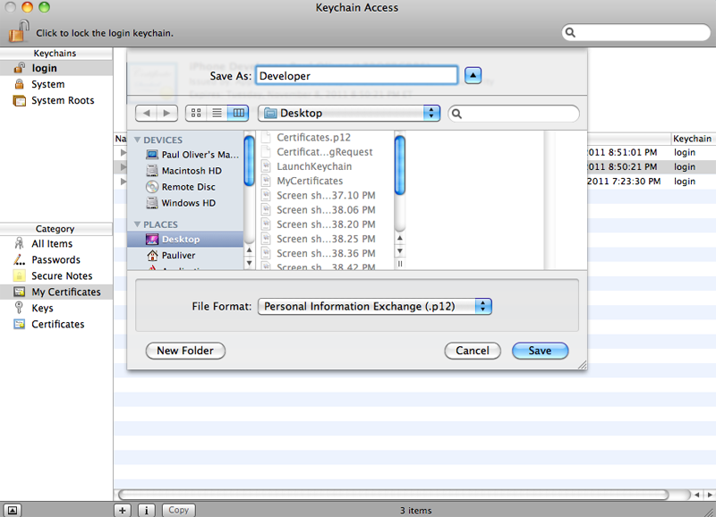
-
在允许您导出密钥对之前，Keychain将提示您输入您的密码。
 输入您的密码并点击 Allow(允许) 来继续导出过程。
输入您的密码并点击 Allow(允许) 来继续导出过程。
- 现在，已经导出了证书和密钥对。把文件转移到您的PC上，以便可以通过配置向导把它们导入到UDK中。
从UDK中重新获得证书
如果您以前为UDK设置过provisioning，那么通过使用Unreal iOS配置向导生成证书请求和密钥对并从Apple的开发者网站上下载证书和mobile provisioning profile，可以很容易地把那个provisioning分发给其他开发者或者移动到新的PC上。要想把该provisioning分发给不同的开发人员，那么您可以把provisioing profile、密钥文件及证书传递到新的PC上，然后通过Unreal iOS Configuration Wizard的 Already a registered iOS developer（已经注册为iOS开发者） 选卡导入他们。导入现有的Provision和证书
一旦生成并下载了开发者证书和provisioning profile(信息提供概述)，那么需要通过配置向导把它们导入到UDK中。
-
点击 按钮来导入provisioning profile(信息提供概述文件)。使用打开的对话框找到先前下载的provisioning profile。一旦成功导入该profile后将出现一个绿色对勾。
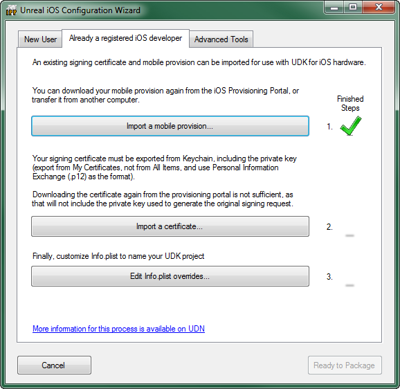
-
接下来，点击按钮导入开发者证书。请使用文件对话框找到您想从 Keychain Access应用程序导出的证书和密钥对。一旦成功地导入证书和密钥对后将出现绿色的对勾。
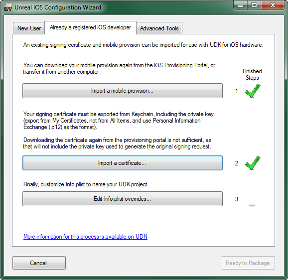
-
点击 按钮来打开 Customize Info.plist(自定义Info.plist) 对话框。
-
填写以下信息：
- Bundle Display Name(包显示名称) - 这是显示在iOS设备上的名称，位于主页的应用程序图标的正下方。您要确保这是个简洁的名称，以便它适合已分配的空间，不会被剪切掉。(示例:
UDN iOS Game) | - Bundle Name _ 用于标识应用程序的简略名称。这个名称应该小于16个字符。(示例:
UDNiOSGame) | - Bundle Identifier*_ 这个标识符应该和先前在Apple的开发者网站上创建的 App ID的包标识符相匹配。如果您使用了通过辅助工具完成的自动App ID创建过程，那么App ID的包标识符是一个通配符(*),这里输入的包标识符可以使您想使用的任何东西。如果您使用手动创建方法(高级Provisioning)并指定了明确的包标识符，那么这里输入的包标识符应该和那个标识符完全地匹配。(*示例:
com.EpicGames.UDNiOSGame)
- Bundle Display Name(包显示名称) - 这是显示在iOS设备上的名称，位于主页的应用程序图标的正下方。您要确保这是个简洁的名称，以便它适合已分配的空间，不会被剪切掉。(示例:
-
点击按钮来保存 Info.plist 信息。一旦成功保存 Info.plist 时将会出现绿色的对勾。
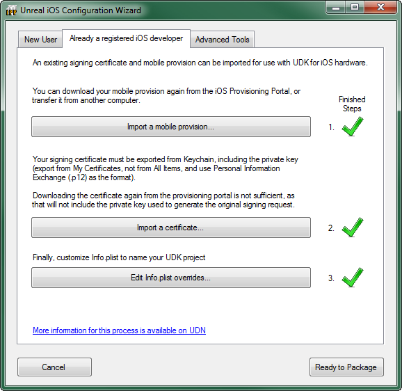
-
点击 按钮退出配置向导。
如果您通过编辑器中工具条上的 Start this Level on iPhone(在iPhone上启动这个关卡) 按钮访问配置向导，打包过程将会继续并且游戏将会被加载到连接的iOS设备上。如果没有连接设备，那么将会出现错误。
如果通过Windows中的开始菜单访问配置向导，那么此时将会简单地关闭配置向导。*待处理的事情* - 如果通过Unreal Frontend打开配置向导是否也是这个情况？ - Jeff Wilson